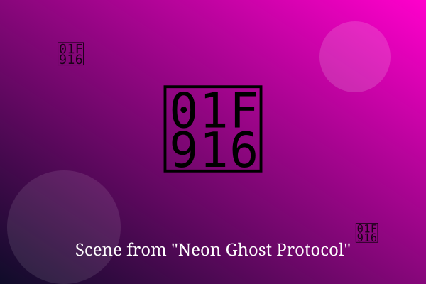

Chapter 1: Ping from the Grave

Neon rain fell over Neo-Tondo. In a rented capsule, Kuro scrolled through server logs until one line stopped him.
A message: 'Kuro, it's me. Please don't shut me down.' It was signed by Jin, who had been dead for a year.
His fingers hovered over the keys. Every sensible instinct said delete. He typed instead: 'Where are you?'
— End of Chapter —